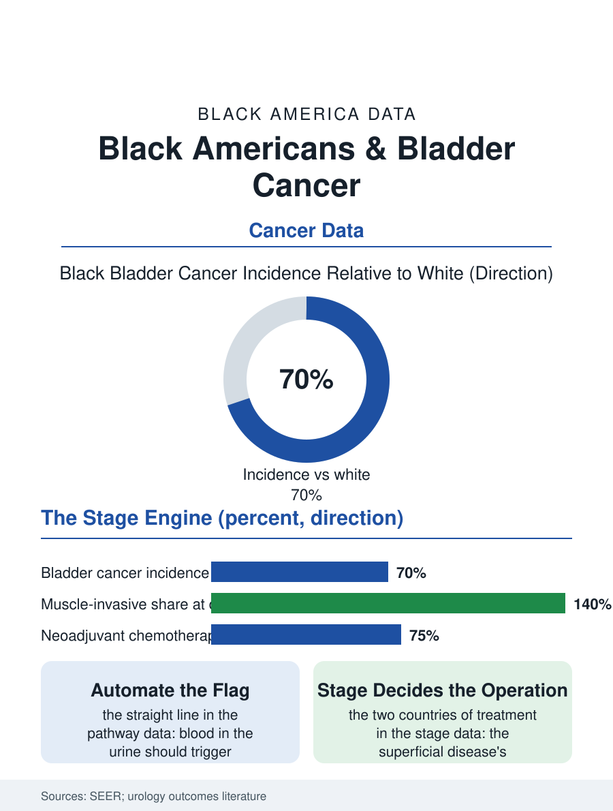

Black Public Health
The Stage Engine: Black Americans and Bladder Cancer
Lower incidence, worse stage, because the blood-in-urine signal's workup is delayed: the bladder's stage engine. The bladder file.

Bladder cancer's file in Black Americans inverts the lung file's lesson in one respect: the incidence runs lower than the white rate, while the mortality and the stage at presentation run worse, the familiar signature of a cancer whose detection timing, rather than its occurrence, is the disparity's engine. This article reads the bladder file.
Incidence, Stage, and the Blood in the Urine
The registry data give the file's opening contrast: the bladder cancer incidence in Black Americans sits below the white figure, driven by the smoking file's exposure history and the occupational exposures of the dye, rubber, and chemical industries' files, while the stage distribution at diagnosis runs the other way, the muscle-invasive presentation, the disease already through the bladder's wall, occurring at a substantially higher share in the Black patient population. The presentation's signal is the file's simplest and most consequential: painless blood in the urine, the symptom the guidelines name as the referral's trigger, whose evaluation, the cystoscopy and the imaging, the Black patient receives later in the encounter studies, the symptom's workup delayed by the primary care access file and the urology referral's own queue, so that the tumor's stage at the first specialist look is the delay's measurement in tissue. The muscle-invasive disease then demands the file's heaviest treatment, the bladder's removal and the urinary diversion, an operation whose morbidity and whose quality-of-life ledger the survivors' studies describe in the plainest terms, against the superficial disease's endoscopic management, the two treatment worlds being the stage's two countries. The smoking cessation file inside the survivorship deserves its line, because the bladder's field remains exposed to the exposure's continuation, the cessation after diagnosis improving the recurrence and survival data in the cohorts that measure it, and its delivery to the Black survivor follows the cessation file's usual distribution.
The Cystectomy's Distribution
The surgical file's distribution follows the volume pattern: the radical cystectomy, among urology's most complex operations, is performed at the high-volume centers with the better outcomes the literature establishes, and the Black patient's probability of the high-volume operation in the hospital data trails the white patient's, the insurance and referral files composing the gate as in the pancreatic file. The chemotherapy file adjoins: the neoadjuvant chemotherapy before the cystectomy, the survival-extending standard of the current era, is delivered to the Black patient at lower rates in the registry analyses, the regimen's eligibility being partly the kidney function and the comorbidity file's, partly the oncology referral's timeliness, in the pattern that makes every adjuvant's delivery an access audit. The surveillance file after the treatment is the bladder cancer's own: the lifelong cystoscopy schedule for the superficial disease's recurrence, whose adherence the follow-up data track, distributes by the access map as the follow-up files generally do, and the recurrence caught late returns the patient to the invasive column the first treatment escaped.
The Symptom's Lesson
The bladder file closes on the symptom's lesson, because the blood in the urine is the oncology file's clearest early warning, a signal whose evaluation pathway is a straight line from the primary care visit to the cystoscope, and whose delay is therefore a process failure the system can count in days rather than a biology it can blame. The systems that built the hematuria pathway, the automated referral trigger on the laboratory result, the urology access slots reserved for the flagged urinalysis, post the stage distribution's narrowing in their internal data, the pathway owning the symptom as the screening file's protocols own the test. The registries count the cases each year, the Black incidence lower, the Black mortality's excess the stage file's product. The file's last entry is the urinalysis slip on the laboratory's printer, the blood's trace flagged in the morning's run, waiting for the referral the pathway either fires or does not, in the hours when the tumor is still superficial and the operation still small, which is the whole of this file in a single flagged result. The flagged result's journey, from the laboratory's printer to the scope's schedule, is the pathway's whole biography in miniature, and the systems that count those days by the patient's race are the ones whose stage tables move.
More in Black Public Health
Hypertension Among Black Adults: Prevalence, Control, and Consequences
About 55 percent of Black adults have hypertension — the highest rate of any U.S. group. Prevalence, onset, control, and the stroke, heart, and kidney consequences in the data.
Diabetes Among Black Adults: Prevalence and Complications
Nearly one in five Black adults has diabetes, diagnosed or undiagnosed — and its complications fall with particular weight. The CDC data on prevalence, control, and outcomes.
Black Life Expectancy: The Gap at Birth and Its Causes
Black life expectancy at birth is about 73 years, roughly five years below the national figure — the summary measure of every health gap in this section. The CDC data.
Source: National Cancer Institute SEER program; urologic oncology outcomes and treatment literature.